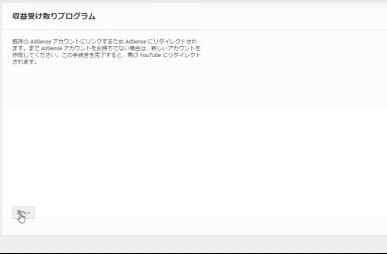
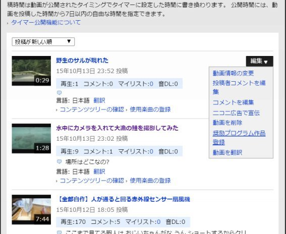

| ３分で学ぶYoutubeニコニコ動画収益化方法: サルでもわかる 動画サイトを収益化したいあなたへ (How to 本) | |
| 市橋 弘康 | |
| Hiroyasu Ichihashi (2015) | |
みなさん、おはよう、こんにちは、こんばんはです。
今回は、今何かと話題な動画の収益化についてご紹介致します。
世の中は動画ブームです。そんな貴方もご自身の動画を収益化してお小遣い稼ぎをしたい方がたくさんいると思います。そんなあなたにご紹介！
今日本で手軽に収益化できる動画共有サイトは２つあります。
「 Youtub e 」と「ニコニコ動画」です。
今回はその２つの動画の収益化設定をお教え致します。
１つ目は 「 Youtub e 」です。
これは設定がちょっと厄介です。
まず
１ 、 Youtub e のアカウントを （ Gmail ) で作ります。
２ 、 Gmai l を使っ て Google Adsens e を使えるように申請します。（申請の許可が降りるまで数時間から数日かかります）
３ 、 Google Adsens e の許可が降り 、 Youtub e 側でさっそく設定です。
Youtub e 画面の右上の自分のアイコンをクリック。そしてクリエイターツールをクリック致します。
４、チャンネルのステータスと機能をクリック。そうすると収益受け取りという欄が出てきます。これを「有効にする」をクリック。
５、項目にしたがって進めていきます。

6 、注意事項を読み、同意する。※このとき注意してほしいのが、自分の広告を自らクリックしないこと、ほかの協力者にクリックしてもらうように誘わないこと。わざとらしいクリック は Googl e さんがすぐに発見してしまうので、発見され次第、一 生 Youtub e で収益化ができなくなります。
７、収益化が有効にできたと思いますので、今度は収益受け取り設定をします。
※収益化が有効になっただけで、これだけでは実際 に Youtub e で稼いだ収益 は Youtub e に貯まるだけなのです 。 Youtub e で稼いだお金を自分の手元に入るよう に Youtub e 収益 を Google Adsens e で受け取れるようにします。（要はネットの銀行のようなものです）最終的 に Google Adsens e から自分の通帳に入るように設定する感じです。通帳設定はご自身でお調べください。
収益受け取り設定を表示をクリック。
８ 、 Adsens e アカウントを関連付けるをクリック
９、項目の通り進んでいく。

１０ 、 Youtub e、 Adsens e で使っ た Googl e アカウントを使ってログインし 、 Youtub eと Adsens e を紐づけします。
１１ 、 Youtub e 側で１つ動画を投稿します。投稿した自分の動画の編集画面で「広告で収益化」をクリック。公開。
１２、そうすると動画が収益化されてます。
１３、あと は Youtub e で稼いだお金 は Google Adsens e に貯まって行きます。
２つめは「ニコニコ動画」です。
ニコニコ動画はめちゃくちゃ簡単です。
１、有料会員になってください。
２、動画を投稿します。
３、投稿した動画の右の方を触ると編集が出ます。
そこで「奨励プログラム作品登録」をクリック。

４、コンテンツツリーの編集をクリック
５、オリジナル作品表明をクリック。この内容でコンテンツツリーを作成をクリック。
６、もう一度動画の画面で「奨励プログラム作品登録」をクリック。
７、利用規約を読み、クリックしていく。
８、登録完了です。
以上で完了です。
※※ ※ Youtub e の収益 は Google Adsens e が管理しているため、５０００円以上貯まらないと銀行に振込されません。
※※※ニコニコ動画の場合は投稿した動画が１ヶ月ごとに再生回数につきポイントが付き、投稿した月から４ヶ月後にクリエイター奨励ポイントが付与されます。合計で１００００ポイント貯まり次第換金できます。１ポイント＝１円です。
以上です。はじめての方は戸惑うかもしれませんが、収益化の支えになれば幸いです。
ありがとうございました。